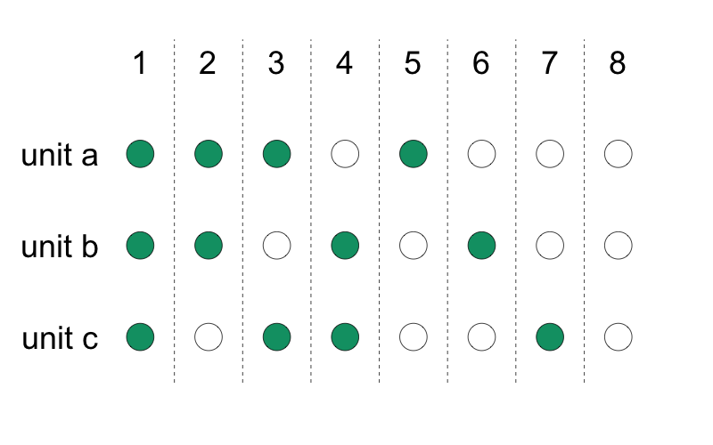
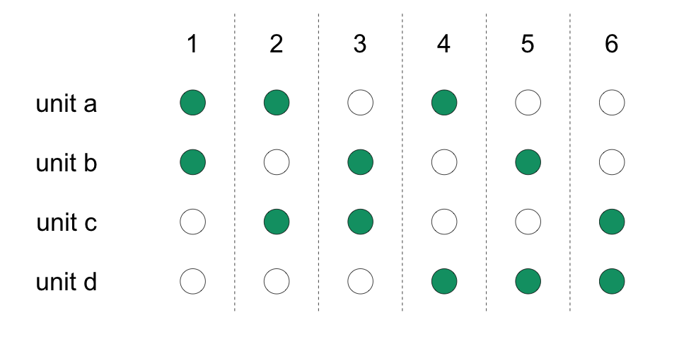
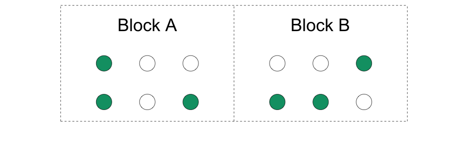
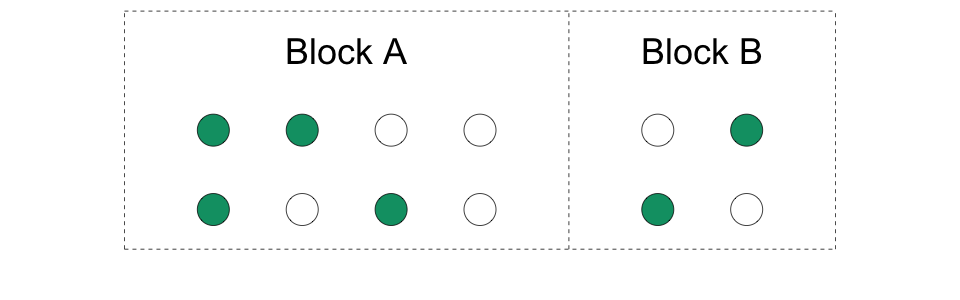
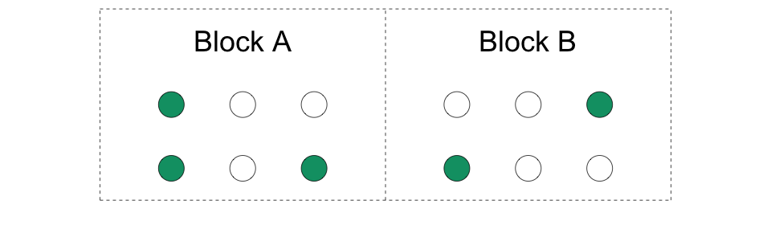
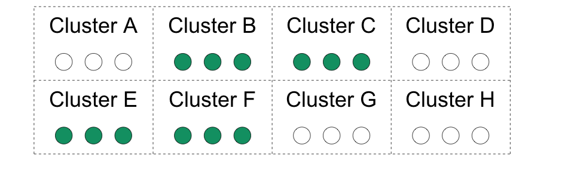

Pour chaque unité, lancez une pièce pour voir si elle sera traitée. Ensuite, vous mesurez les résultats au même niveau que la pièce.
Les pièces ne doivent pas nécessairement être équitables (50-50), mais vous devez connaître la probabilité d’assignation du traitement.
4.3Randomisation simple (tirage au sort)

4.4Randomisation simple (tirage au sort)
Avantage : la randomisation simple permet de ne pas connaître à l’avance la taille totale de l’échantillon.
Désavantage : vous ne pouvez pas garantir un nombre précis d’unités traitées et d’unités de contrôle.
simple_ra(3)
[1] 0 0 0
simple_ra(3)
[1] 1 0 0
4.5Randomisation complète (tirage d’une urne)
Un nombre fixe de \(m\) sur \(N\) unités est assigné au traitement.
La probabilité qu’une unité soit assignée au traitement est de \(m/N\).
C’est comme avoir une urne avec \(N\) boules, dont \(m\) sont marquées comme traitement et \(N-m\) comme contrôle. La loterie publique utilise cette méthode.
4.6Randomisation complète (tirage d’une urne)

4.7Randomisation complète (tirage d’une urne)
Avantage : particulièrement utile lorsque vous avez un petit nombre d’unités pour éviter que toutes les unités soient dans une seule condition.
Désavantage : il faut connaître à l’avance le nombre total d’unités.
complete_ra(4)
[1] 1 1 0 0
complete_ra(4)
[1] 1 0 0 1
4.8Randomisation par bloc (ou stratifiée)
Nous créons des blocs d’unités et randomisons séparément dans chaque bloc.
Nous faisons des mini-expériences dans chaque bloc. De ce fait, nous avons des unités traitées et des unités de contrôle dans chaque bloc.
4.9Randomisation par bloc (ou stratifiée)

Exemple : bloc = région, unités = communautés. Nous randomisons le traitement au niveau communautaire au sein de la région et mesurons également les résultats au niveau communautaire.
4.10Randomisation par bloc (ou stratifiée)

La taille des blocs peut varier.
4.11Randomisation par bloc (ou stratifiée)

La probabilité de sélection des individus dans le groupe de traitement peut varier d’un bloc à un autre.
4.12Randomisation par bloc (ou stratifiée)
Comment définir vos blocs ?
Créez des sous-groupes pour lesquels vous souhaitez estimer l’ATE. L’effet moyen de traitement pour un sous-groupe est aussi appelé effet moyen de traitement conditionnel (CATE). Vous pouvez les utiliser pour connaître les différences entre les CATE d’un groupe et d’un autre.
4.13Randomisation par bloc (ou stratifiée)
Comment définir vos blocs ?
Par des variables qui prédisent le résultat. Cela augmentera la précision de vos estimations.
4.14Randomisation par bloc (ou stratifiée)
Avantage : vous évitez les randomisations malheureuses qui créent des groupes de traitement et de contrôle différents selon la variable utilisée pour créer les blocs. Les blocs sont généralement très utiles.
Particulièrement utile lorsque vous avez un groupe rare.
Mais nous avons besoin de données pour former des blocs avant la randomisation.
Dans une étude randomisée par grappe, toutes les unités de la grappe sont assignées au même statut de traitement.
4.17Randomisation par grappe (cluster)

Le traitement est assigné au niveau de la grappe.
Le résultat est mesuré au niveau de l’unité.
4.18Randomisation par grappe (cluster)
Quand procéder à une randomisation par grappe ? Si l’intervention doit fonctionner au niveau de la grappe.
Ne le faites pas si vous pouvez l’éviter ! La randomisation par grappe réduit généralement la puissance statistique. La quantité dépend de la corrélation intra-groupe (ICC ou \(\rho\)). Un \(\rho\) plus élevé est pire.
4.19Randomisation par grappe (cluster)
Si vous devez utiliser la randomisation par grappe, il est préférable d’en avoir un plus grand nombre.
Un nombre réduit de grappes nuit à votre capacité à détecter les effets du traitement et conduit à des \(p\)-valeurs et des intervalles de confiance (ou même des estimations) trompeurs.